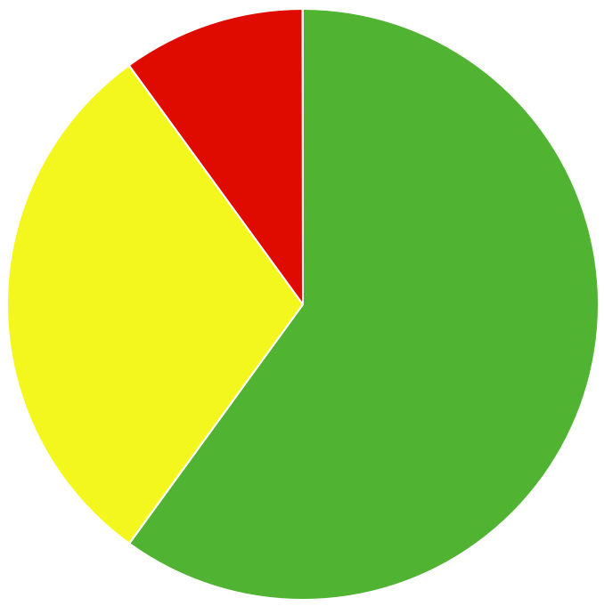

<ion-content>
  <ion-content padding class="content">
    <ion-grid fixed="true" class="ion-align-items-center">

      <ion-row class="ion-align-items-center">
        <ion-col>
          <ion-card class="card">
            <ion-card-header class="title">
              <ion-card-title>Overview</ion-card-title>
            </ion-card-header>
            <ion-card-content>
              <ion-list lines="none">
                <ion-list-header class="subtitle">Task Completion</ion-list-header>
                 

                <ion-item class="success">
                  <ion-label slot="start">Successful</ion-label>
                  <ion-label slot="end">60%</ion-label>
                </ion-item>
                <ion-item class="notA">
                  <ion-label slot="start">Not Attempted</ion-label>
                  <ion-label slot="end">30%</ion-label>
                </ion-item>
                <ion-item class="failed">
                  <ion-label slot="start">Failed</ion-label>
                  <ion-label slot="end">10%</ion-label>
                </ion-item>
              </ion-list>
              <ion-list lines="none">
                <ion-list-header class="subtitle">Task Feedback</ion-list-header>
                <ion-item class="chip">
                  <ion-chip class="red" slot="start">
                    <ion-label>30%</ion-label>
                    <ion-icon class="icon" name="sad-outline"></ion-icon>
                  </ion-chip>
                  <ion-chip class="green" slot="end">
                    <ion-label>70%</ion-label>
                    <ion-icon class="icon" name="happy-outline"></ion-icon>
                  </ion-chip>
                </ion-item>
              </ion-list>
            </ion-card-content>
          </ion-card>
        </ion-col>
      </ion-row>
    </ion-grid>
  </ion-content>